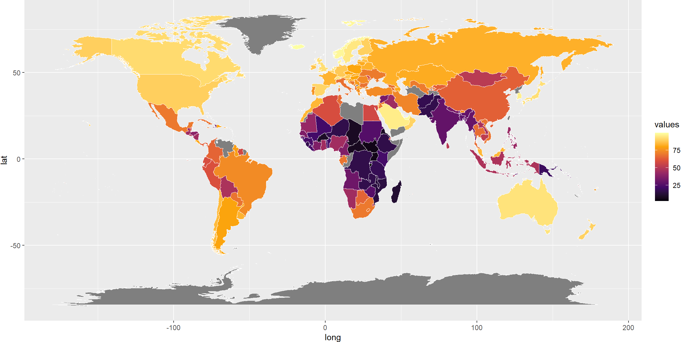
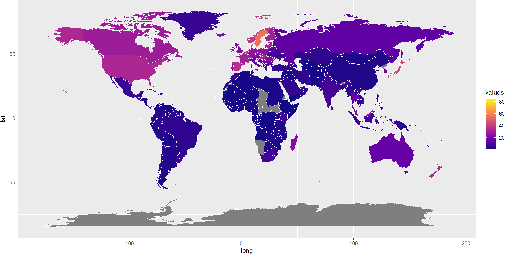
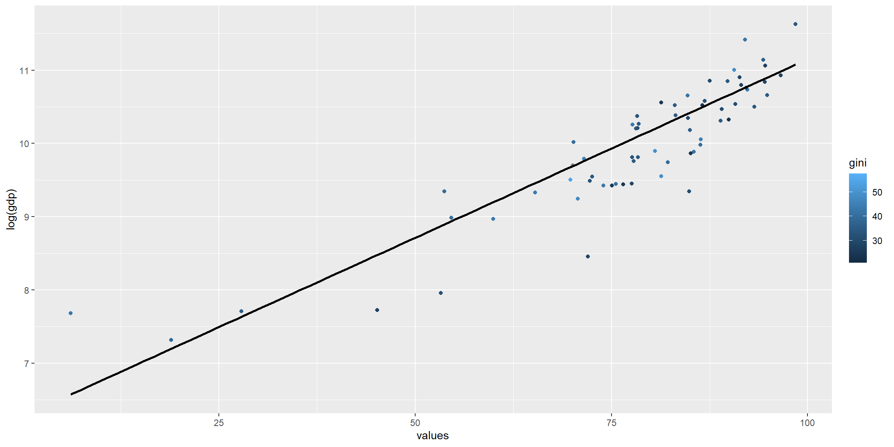
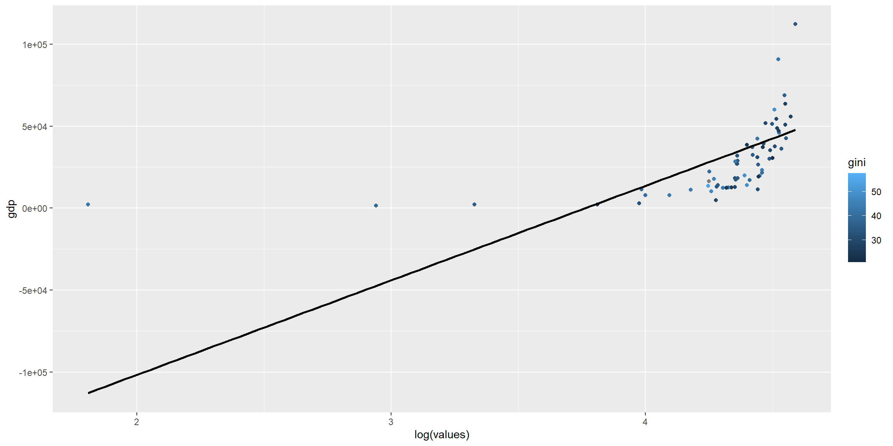
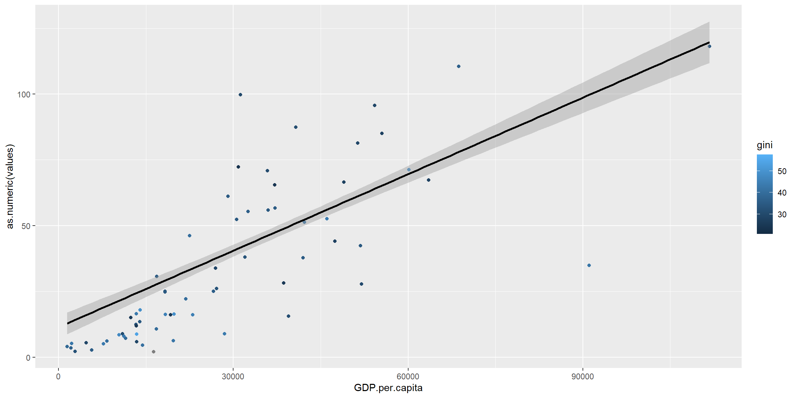
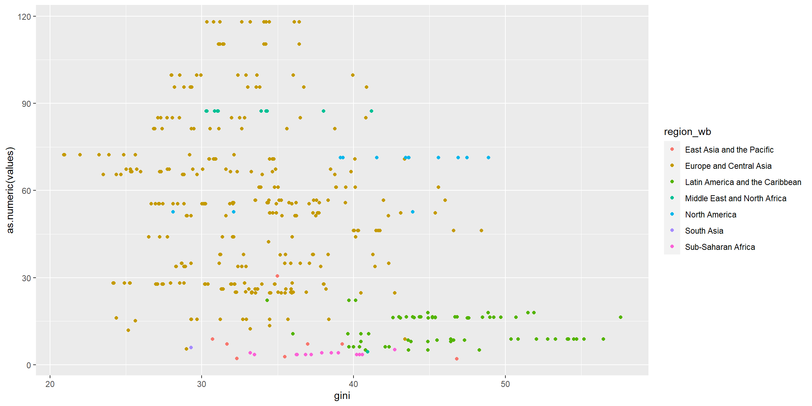
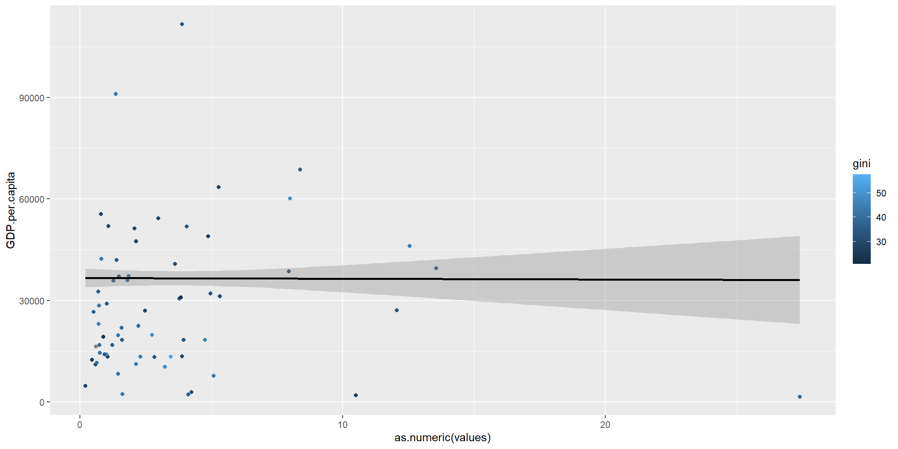
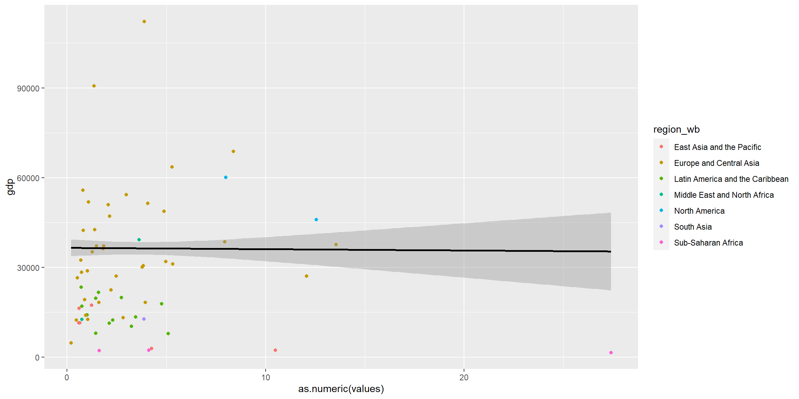
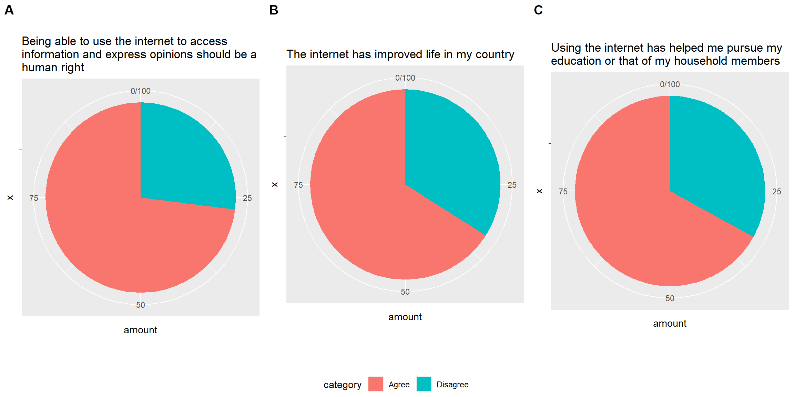

# A tibble: 266 × 4
Country.Name region Dyear accessyear_values
<chr> <chr> <chr> <dbl>
1 Aruba AW D2020 NA
2 Africa Eastern and Southern <NA> D2020 25.0
3 Afghanistan AF D2020 18.4
4 Africa Western and Central <NA> D2020 41.7
5 Angola AO D2020 32.6
6 Albania AL D2020 72.2
7 Andorra AD D2020 93.2
8 Arab World <NA> D2020 66.4
9 United Arab Emirates AE D2020 100
10 Argentina AR D2020 85.5
# ℹ 256 more rows# A tibble: 247 × 6
region Name Continental.region Price.per.GB...chang…¹ Dyear priceyear_values
<chr> <chr> <chr> <chr> <chr> <chr>
1 IL Isra… NEAR EAST -97.57% D2020 0.11
2 IT Italy WESTERN EUROPE -95.04% D2020 0.43
3 FJ Fiji OCEANIA -97.54% D2020 0.59
4 SM San … WESTERN EUROPE -98.60% D2020 1.16
5 KH Camb… ASIA (EX. NEAR EA… -98.82% D2020 1.50
6 PK Paki… ASIA (EX. NEAR EA… -93.31% D2020 0.69
7 IN India ASIA (EX. NEAR EA… -38.18% D2020 0.09
8 KG Kyrg… CIS (FORMER USSR) -35.17% D2020 0.21
9 FR Fran… WESTERN EUROPE -83.71% D2020 0.81
10 CO Colo… SOUTH AMERICA -93.84% D2020 3.46
# ℹ 237 more rows
# ℹ abbreviated name: ¹Price.per.GB...change..5.years.# A tibble: 6 × 9
Country.Name region Dyear.x values.x Name Continental.region
<chr> <chr> <chr> <dbl> <chr> <chr>
1 Aruba AW D2020 NA Aruba CARIBBEAN
2 Africa Eastern and Southern <NA> D2020 25.0 Namibia SUB-SAHARAN AFRICA
3 Afghanistan AF D2020 18.4 Afghan… ASIA (EX. NEAR EA…
4 Africa Western and Central <NA> D2020 41.7 Namibia SUB-SAHARAN AFRICA
5 Angola AO D2020 32.6 Angola SUB-SAHARAN AFRICA
6 Albania AL D2020 72.2 Albania EASTERN EUROPE
# ℹ 3 more variables: Price.per.GB...change..5.years. <chr>, Dyear.y <chr>,
# values.y <chr>